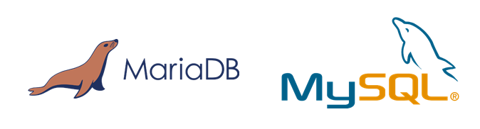
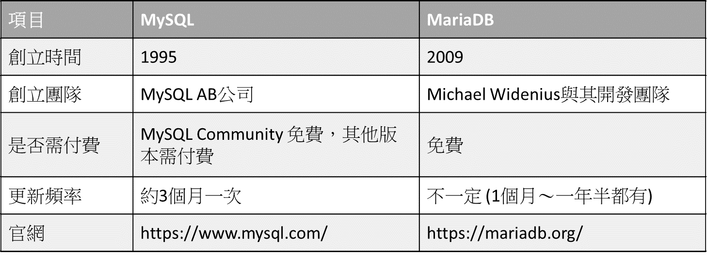

MariaDB與MySQL
兩種資料庫管理系統的比較
資料庫在日常生活中使用到的機率其實相當之高，舉凡手機APP像是台鐵e訂通、全聯福利中心……，或是網站例如火車時刻表查詢、104人力銀行……，或者是金融系統像是各家銀行的網路銀行、證券交易系統等等，無一不用到資料庫來儲存每個使用者或客戶的相關資料。
面對如此龐大的資料，假如此時有一個「資料庫管理系統」來幫忙我們，那麼當我們想要進行資料的建立、查詢、修改、刪除……等等操作時，只要遵照著資料庫管理系統的規則，就可以輕鬆的達成我們想要的操作。資料庫管理系統有百百種，常常可以聽到的有「MySQL」與「MariaDB」這兩個。雖然光從名字看不出來，但這兩個系統的關係可說是非比尋常。從兩家的Logo應該可以看出一點端倪(純屬個人感覺)：

雖然兩隻動物不一樣，但是乍看之下都有類似的流線型輪廓，只是剛好左右相反(●’◡’●)
故事可以從MySQL的發跡開始。1995年MySQL AB這家公司創立，並且擁有MySQL這個產品。後來到了2008年同意被昇陽微系統(Sun Microsystems)給收購。後來2009年時昇陽微系統又被甲骨文公司(Oracle)給收購(相信主因是看上Java這個火紅的技術)。MySQL變成Oracle旗下的產品之一，然而Oracle本身已經有了資料庫管理系統的產品Oracle Database，想必一個外來的產品跟自家的產品互相競爭應該是Oracle不樂見的。所以雖然MySQL到了Oracle旗下之後並沒有消失(這是一個有趣的問題，為什麼不直接把MySQL給下架？)，但是能取得的資源減少了許多，而且MySQL商業版的售價被大幅的提高(在Sun時價格為599美元起，到了Oracle時售價漲到2000美元)。大家開始懷疑免費版的MySQL(MySQL Community)是否未來還會繼續存在。所以MySQL的創始人之一Michael Widenius與部分MySQL開發團隊另外開發了MariaDB這個開源(免費且能夠看得到原始碼)的資料庫管理系統。前幾個版本的版本編號與MySQL相同，直到版本5.5之後就不再跟著MySQL的版本號了，給人一種下定決心要做出差異的感覺。
這裡給出一個表格整理了MySQL與MariaDB之間的比較：

小結
以上是關於MySQL與MariaDB這兩個資料庫管理系統的歷史回顧與簡單的介紹。至於該如何選擇要使用哪一個資料庫管理系統，除了是否需付費之外，其他像是是否有技術支援、更新頻率、開發/使用環境、未來使用趨勢…..等也都是考量的因素，就看開發者/使用者們的決定了。

國立交通大學材料系奈米科技碩士班畢業(現在應該稱國立陽明交通大學ʕ •ᴥ•ʔ)。雖然非資工相關科系畢業，但本著對資工領域的興趣而開始自學相關知識，目前則專攻網頁相關知識，如HTML5、CSS3、JavaScript、Node.js。以跨領域學習者的角度來介紹資工領域相關的知識，除了加深自己對相關知識的理解，也期望同是跨領域學習的朋友們因為瀏覽我的文章而有更多不一樣的觀點可以參考。